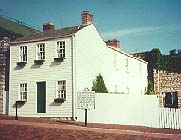

Bike Ride USA Journal
Day 37 Ida Grove to Stratford 80+ miles. I went through 2 great towns. Lakeview and Lake City. Both clean, cute and great city parks. What makes these city parks and small town so nice is that no yard has a fence and all yards have proud owners.Day 39 Brandon to Canton. 60 miles. Route E17 I had lunch at Troy Mills and stopped at Montecello for 3 hours of computer work. I finished the day at Canton. I camped behind a bar by the river and washed up in the river. I had a huge pork chop dinner at he Longhorn Bar and Restaurant and stayed there 'til closing. Heck guys bought me drinks all night, I couldn't let them down. At the bar was a guy who used to work in the fitness/sales industry and we actually attended the same conventions and he knew one of my ex-bosses. Small world, population 1 bar, we have a real life connection.
| Life on the Mississippi |
Day 41. Sabula to Andalusia/ Illinois City. 80 miles. Savanna, a town just on the other side of Sabula was beautiful. A river front community similar to that of CA ocean fronts. I stopped at a town called Port Byron and had lunch at Deweys. I talked to a bunch of kids for a while and they just fed me energy. The ride was flat most of the day and I stopped at one point to talk to a man picking up trash on the side of the road. He was retired and just did it for something to do. I was also flagged down by another older man I am calling the Man of Wisdom. He too wanted to talk to me. He was retired and in his younger days had done a lot of touring himself. He gave me a sketch of where we met to remember him by. I camped that night at a great campground and met Jack and Jerry. A couple of computer guys, who once a year go fishing together. The 3 of us played frisbee 'til dark.
Day 42 Illinois City to Lomax. 60 to 70 miles. I had breakfast with Jack and Jerry. We cooked the manly way of barbecue. I tasted real good and was even more fun to make. The day was a struggle. I got a flat, and I had to stop at Oquawand do laundry where a couple of JWs got a hold of me and talked my ear off. Dinner tonight was at the pink house. A restaurant known for its good food and big servings. The bartender ended up buying my dinner form me. As I rested that night with a full stomach and happy mind some local kids ran by shaking my tent and making all kinds of noise to run me out of town. The cop patrolled often after that but needless to say I did not get much sleep.
|  |
| The fence that Tom whitewashed |
Day 43 30 Miles Hannibal to Louisiana. I spent the day as a tourist doing all the touristy things. I had breakfast of peanut butter and jelly under the Tom and Huck statue, did the 6 building tour, Mark Twain Home, His fathers office, Becky's House, Courthouse and two more I forgot. I also went to the Cave. As I left town I stopped at a scenic lookout of the Mississippi Valley. There I met the Barfields, a family who took a real interest in what I was doing. I must have talked to them for almost 1 hour. In Louisiana, I camped out in the side yard of some kids home I met at the convenience store. The home was a run down trailer with 4 kids a single mom and a neglected 3 month old puppy. The youngest kid was Andrew and he stayed outside with me 'til dark showing me his cars. Mom was not thrilled at first having me but by the end of the night she liked me enough to send me to the store with her son. Sandy, Donny, Andrew, April, Greg and Wishbone. Of the 4 kids there 3 were hers from 2 different dads. Did I mention the dads were also brothers. Humm
Day 44 50 miles Louisiana to St Louis. As I was packing Andrew and Greg came out to say good-bye. I think we were all sad to see me go. All I could think of was here were 2 kids and a dog with clean slates in life and all Mom does is yell at them or ignore them. I wish I could have done more to help those kids out in few hours I had with them. The ride to St Louis should have been 70 miles but a man pulled over to give me a ride to the city after I got stopped by the cops for speeding. LOL. The cop stopped me for riding on the freeway but when I asked him if there were any backroads to the city he did not have an answer. (I later found out that Stef and Jen got a police escort to the city.) The man in the car was Morris. He later bought me lunch and paid the bill for some bike parts I needed. He said that he and his wife set aside money each week to help anyone who the needs help. I was that person that week. He is also going to pick me up in two days and drive me out of the city. I spent the night at a Youth Hostel owned by a guy for 25 years. He bought it when he was 30. He told me something I will remember for the rest of my trip. A trip like mine has its own mind, don't try to control it. You will enjoy it more.
Day 45 Day off in St Louis. Did the Gateway Arch, the Budweiser Tour, dinner at Micro brewery. I met Mac and his friend at the Hostel. A couple of bikers just passing through.
Day 46 St Louis/Waterloo to Charter. 40 miles Morris picked me up at 8:00 and we headed out of town. He dropped me off at Waterloo where we had an all you can eat breakfast. He again picked up the bill and would not take money or give me his last name or address. He just wanted to help out and be sure to get nothing in return. That worries you, huh MOM. I had a late start, a rotten ride and had 2 flats. A bad day you may ask. Well as I was walking my bike to fix the second flat to get out of the rain, Seek the Journey drove by. I had not seen them in over 2000 miles, we did a completely different route and over 3 weeks have passed since I last say them in Idaho(Stef and Jen). I camped there that night just because it seemed right. A great city park with showers, good company and shelter. I met Karen and Ron tonight. A married couple on a tandem bike who are also going cross country.
| Back to Top |
|---|